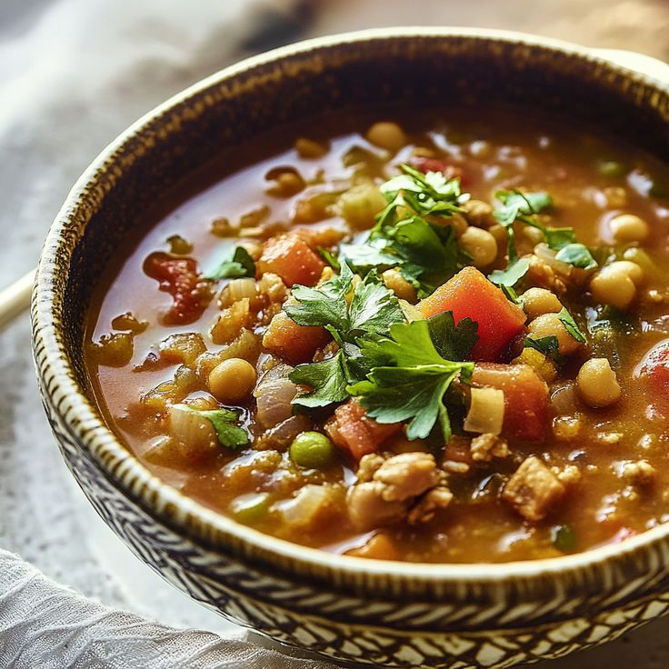

Harira Soup
Harira is a traditional Moroccan soup, especially popular during Ramadan. It's a rich and fragrant soup made with a base of tomatoes, lentils, and chickpeas, and often includes small pieces of meat.
Ingredients
- 250g lamb or beef, cubed
- 1 cup dried chickpeas, soaked overnight
- 1/2 cup brown or green lentils
- 1 large onion, chopped
- 400g chopped tomatoes
- 1/2 cup chopped celery
- Spices: 1 tsp each of turmeric, cinnamon, and ginger
- Handful of fresh cilantro and parsley, chopped
- 3 tbsp flour mixed with water (for thickening)
Instructions
Show cooking steps
- In a large pot, combine meat, chickpeas, lentils, onion, tomatoes, celery, spices, and 6 cups of water.
- Bring to a boil, then reduce heat and simmer for about 1.5-2 hours, or until meat and chickpeas are tender.
- Stir in the fresh herbs.
- Slowly whisk in the flour and water mixture to thicken the soup. Cook for another 5-10 minutes.
- Season with salt and pepper to taste. Serve hot with a squeeze of lemon.
Video Tutorial
Country of Origin
Harira is a cornerstone of Moroccan cuisine.